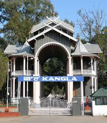
Kangla Fort and Kangla Museum
Historic fort and museum showcasing Manipur's heritage

Historic fort and museum showcasing Manipur's heritage
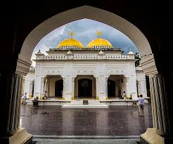
Historic temple dedicated to Lord Krishna
Museum with exhibits on Manipur's history and culture
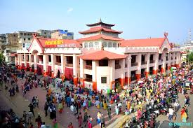
Iconic market run by women vendors
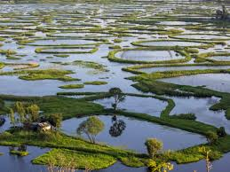
Largest freshwater lake in Northeast India with floating islands
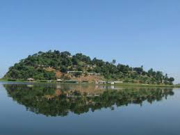
Floating national park with unique biodiversity
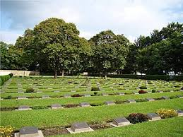
War memorial honoring soldiers of World War II
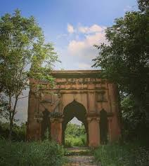
Historical site with ancient ruins and temples
Largest freshwater lake in Northeast India with floating islands
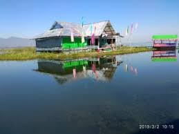
Located in Loktak Lake, popular for picnics and boating
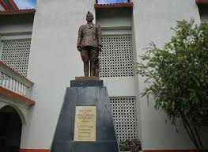
Commemorates the Indian National Army's role in India's independence struggle
Nearby attractions
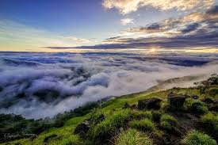
Known for the Shirui Lily, a rare flower found only here
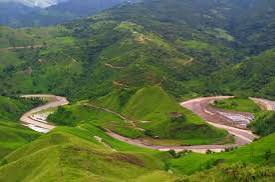
Scenic viewpoint offering panoramic views of the surrounding hills
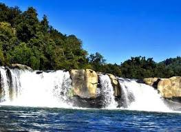
Picturesque waterfall amidst lush greenery
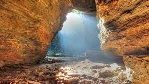
Longest cave in Manipur, known for stalagmites and stalactites
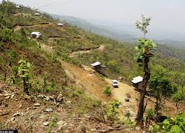
Rich biodiversity including the endangered Sangai deer
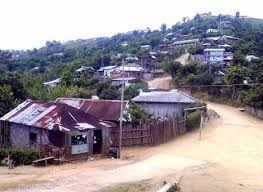
Border town known for its scenic landscapes
Popular trekking destination offering panoramic views of the valley
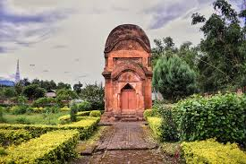
Historic fort ruins reflecting the ancient kingdom's architecture
Only floating national park in the world, home to the endangered Manipur brow-antlered deer (Sangai)
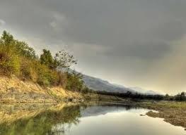
Beautiful river ideal for nature lovers and serene walks
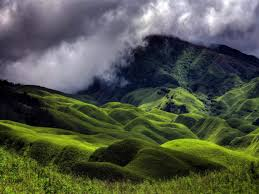
Shared with Nagaland, known for its stunning landscapes and seasonal flowers

Commemorates the Anglo-Manipur War of 1891
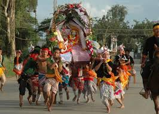
Traditional Manipuri festival celebrating the deities and ancestors
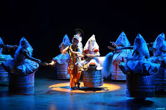
Traditional dance depicting the life of Lord Krishna
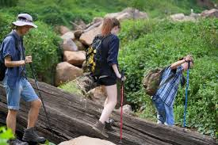
Opportunities in various hills and valleys
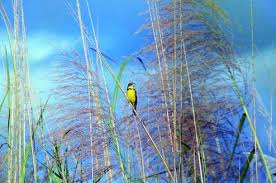
Keibul Lamjao National Park and other natural habitats